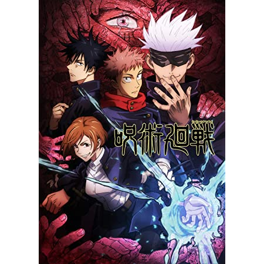

Demon slayer

Storyline:
Yuji Itadori, a kind-hearted teenager, joins his school's Occult Club for fun,
but discovers that its members are actual sorcerers who can manipulate the energy between beings for
their own use. He hears about a cursed talisman - the finger of Sukuna, a demon - and its being targeted
by other cursed beings. Yuji eats the finger to protect his friends, and ends up becoming Sukuna's host.
However, Yuji discovers that he has inherited magic and is able to control this power without interference
from Sukuna. He joins the Tokyo Metropolitan Magic Technical College to consumes all of Sukuna's fingers,
which will enable a full exorcism to take place that will free him.
Read more on imdb